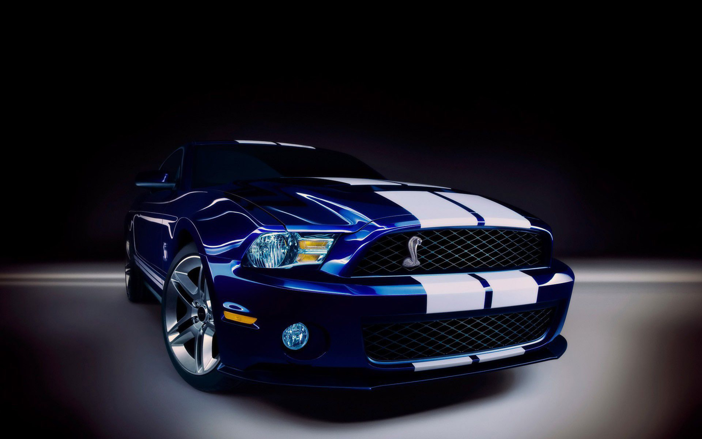

Mașina este un vehicul cu patru (rar, trei sau șase) roți, acționat de un motor cu ardere internă, cu abur, cu electricitate sau aer comprimat. Are scaune pentru conducător și pentru cel puțin un pasager.
Mașina a fost construită pentru a călători din punctul A în punctul B cu o ușurință mult mai mare. În zilele noastre, automobilul a devenit o necesitate pentru orice familie, motiv pentru care piața mașinilor second-hand crește exponențial de la an la an.
Clasificarea automobilelor în funcție de categoria de permis necesară:
| Tipul automobilului | Greutate | Restricții | Categorie permis |
|---|---|---|---|
| Vehicul cu 2 sau 3 roți | - | Viteză maximă proiectată ce nu depășește 45 km/h | AM |
| Motociclete ușoare | - | Capacitate cilindrică maximă de 125 cm3 și putere nominală mai mică decât 11 kW | A1 |
| Motociclete | - | Putere nominală mai mică decât 35 kW | A2 |
| Motociclete grele | - | - | A |
| Autovehicul cu pasageri | < 3500kg | Maximum 8 pasageri | B |
| Autovehicule de categoria B ce tractează o remorcă | < 7000kg | Masa remorcii nu trebuie să depășească 3500kg | BE |
| Autovehicule de marfă | > 3500kg și < 7500kg | Maximum 8 pasageri | C1 |
| Autovehicule de categoria B sau C1 ce tractează o remorcă grea | < 12000kg | Masa combinată nu trebuie să depășească 12000kg | C1E |
| Autovehicule de marfă | > 3500kg | Maximum 8 pasageri | C |
| Autovehicule de categoria C ce tractează o remorcă grea | - | - | CE |
| Autovehicule de transport | - | Maximum 16 pasageri, lungime maximă de 8m | D1 |
| Autovehicule de categoria D1 ce tractează o remorcă grea | - | Maximum 16 pasageri, lungime maximă de 8m | D1E |
| Autovehicule de transport | - | Este posibil transportul pentru peste 8 pasageri | D |
| Autovehicule de categoria D ce tractează o remorcă grea | - | Este posibil transportul pentru peste 8 pasageri | DE |
Industria auto în 2021 a trecut prin câteva evenimente importante, care din păcate au fost negative. Criza microcipurilor a fost prima problemă care a lovit această industrie la nivel global. Producția de mașini a fost limitată încă din primele zile din an și a continuat sa scadă gradual până în prezent. Potrivit statisticilor, 7.1 milioane de autovehicule nu au fost fabricate din cauza crizei semiconductoarelor.
Top al țărilor producătoare de mașini în anul 2021:
AUTO BILD este un brand multimedia ce se adresează tuturor pasionaților de automobile. AUTO BILD România este ghidul practic pentru cei interesați de cumpărarea unei mașini sau de schimbarea automobilului deținut în prezent. În următoarea secțiune puteți accesa site-ul AUTO BILD România.
Pentru pasionații ce doresc un wallpaper cu o mașina Ford Mustang, puteți descărca următoarea fotografie apasând click-dreapta și apoi „Save Image as”.
